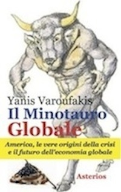
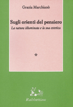
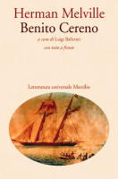
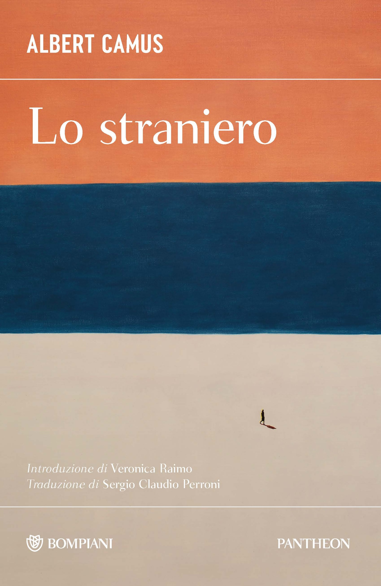
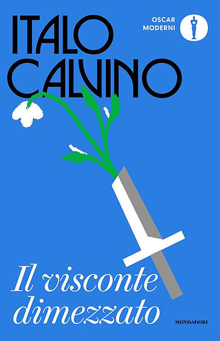
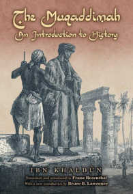

37:44 · 17 OPERE
Yanis Varoufakis, Il Minotauro Globale.
Il filo del discorso
Il minotauro globale di Yanis Varoufakis è il punto di partenza per una riflessione che si sposta presto dall’economia alla condizione umana. Il relatore apprezza il ricorso al mito e soprattutto l’aporia iniziale, intesa come crisi delle certezze e possibilità di ripensare il mondo. Il richiamo alle negoziazioni greche e a Thomas Wieser introduce una critica del rapporto fra potere tecnico e responsabilità democratica, mantenendo distinte le testimonianze di Varoufakis dalle funzioni istituzionali documentate. Il centro del contributo è letterario: Bartleby, l’uomo senza qualità, Meursault e Bardamu rappresentano differenti forme di estraneità; Utz suggerisce la sopravvivenza della cultura ai margini del potere. Attraverso Céline e Tempi moderni, il lavoro industriale diventa il luogo della riduzione della persona a strumento. Pirandello e Amleto accompagnano la critica delle realtà presentate come inevitabili, mentre Reich è richiamato sul bisogno di approvazione del piccolo uomo. La seconda grande allegoria è Il visconte dimezzato, con Medardo e il costruttore di patiboli Pietrocchiodo: il relatore vi legge una tecnica capace di funzionare senza interrogare il bene. Il ritorno finale a Varoufakis passa per Ibn Khaldun e la solidarietà di gruppo, confrontati per analogia con Volterra e Vico. La scheda distingue queste letture dalla storia delle singole opere e dalle diagnosi generali sulla modernità: è un percorso personale attraverso i libri, non una esposizione completa della teoria macroeconomica del Minotauro.
I libri nel discorso

Il minotauro globale. L’America, le vere origini della crisi e il futuro dell’economia globale
Copertina: Asterios, Trieste, giugno 2012, traduzione di Piero Budinich, 256 pagine, formato 135 × 215 mm.
Copertina autentica Asterios con figura del Minotauro, titolo blu e rosso e fascia gialla del sottotitolo. Il parlato ricorda il 2013; il catalogo documenta la prima italiana nel giugno 2012 e non consente di assegnare una precisa ristampa al video.
Il minotauro globale di Yanis Varoufakis, Asterios, esplicito.
Passaggio 0:14 ↗ · Fonti e libro ↗
Sugli orienti del pensiero. La natura illuminata e la sua estetica
Copertina: Rubbettino, 1994, Saggi brevi di estetica comparata, due volumi indivisibili, 230 pagine complessive secondo il catalogo editoriale.
Immagine editoriale autentica verde e rosa con autrice, titolo e sottotitolo. È un singolo piatto della pubblicazione in due volumi, non una fotografia di entrambi.
Grazia Marchianò e Sugli orienti del pensiero, in due volumi, espliciti.
Passaggio 6:35 ↗ · Fonti e libro ↗
Bartleby lo scrivano
Copertina della raccolta: Bompiani · Bartleby lo scrivano e altri racconti · 2018
Copertina della raccolta Bompiani che contiene Bartleby lo scrivano. Non è presentata come copertina di un’edizione autonoma del racconto né come l’esemplare citato nel video.
Bartleby lo scrivano e Melville espliciti, con la formula preferirei di no.
Passaggio 8:16 ↗ · Fonti e libro ↗
Benito Cereno
Copertina: Marsilio, 2012, Letteratura universale / Frecce, a cura e traduzione di Luigi Ballerini, testo inglese a fronte, 416 pagine. Opera pubblicata nel 1855 e raccolta in The Piazza Tales nel 1856.
Copertina autentica crema di Marsilio con autore e titolo rossi e immagine ovale di una nave. È la specifica edizione bilingue 2012; non è Bartleby né una raccolta generica.
Benito Cereno esplicito; grafia normalizzata dal contesto melvilliano.
Passaggio 8:31 ↗ · Fonti e libro ↗
L’uomo senza qualità
Copertina: Newton Compton · eBook di riferimento
L’uomo senza qualità di Musil esplicito.
Passaggio 9:25 ↗ · Fonti e libro ↗
Lo straniero (L’Étranger)
Copertina: Immagine della edizione Bompiani, Pantheon, settembre 2026, 160 pagine, introduzione di Veronica Raimo, traduzione di Sergio Claudio Perroni. Opera originaria Gallimard, 1942.
Copertina autentica Bompiani arancio, blu e sabbia con una piccola figura umana; titolo, autore, introduzione e traduzione leggibili. È la ristampa 2026 del catalogo corrente, non l’edizione del video né la prima del 1942.
Camus e L’Étranger / Lo straniero espliciti, normalizzati dalla trascrizione automatica.
Passaggio 9:29 ↗ · Fonti e libro ↗
Chi è l’uomo?
Copertina: SE, 2023
Heschel e la domanda chi è l’uomo: riscontro del titolo, senza una edizione determinata.
Passaggio 10:35 ↗ · Fonti e libro ↗
Bibbia
Copertina: San Paolo, 2014 · Nuova Versione dai Testi Antichi · edizione di riferimento
Salmi e tradizione biblica espliciti, senza numero di salmo o edizione identificati.
Passaggio 10:50 ↗ · Fonti e libro ↗
Viaggio al termine della notte
Copertina: Corbaccio · 2011
Copertina autentica controllata visivamente. Edizione di riferimento; non identifica l’esemplare usato o citato nel video.
Viaggio al termine della notte e Céline espliciti, poi discussi estesamente.
Passaggio 11:35 ↗ · Fonti e libro ↗
Il visconte dimezzato
Copertina: Mondadori, Oscar moderni, 12 gennaio 2023, 144 pagine, presentazione dell’autore e scritto di Mario Barenghi. Opera originaria Einaudi, 1952.
Copertina autentica blu Oscar moderni con nome di Calvino nero e spada da cui cresce un fiore bianco. L’edizione illustrata è del 2023 e non è la prima del 1952 né una ristampa vista nel filmato.
Il visconte dimezzato di Calvino esplicito, poi analizzato attraverso Medardo e Pietrocchiodo.
Passaggio 11:40 ↗ · Fonti e libro ↗
Il buon soldato Švejk
Copertina: The Good Soldier Svejk, Penguin Classics, 28 aprile 2005, 784 pagine, traduzione inglese di Cecil Parrott, illustrazioni di Josef Lada, ISBN 9780140449914. Il buon soldato Švejk è il titolo italiano descrittivo del riferimento, non l’identificazione di una specifica traduzione usata nel filmato.
Copertina autentica Penguin: illustrazione di figure in movimento, uniforme e stampella, fascia bianca e nera con autore e titolo. Non è la copertina di una raccolta di racconti di Hašek né un ritratto generico del personaggio.
Il soldato Švejk esplicito, con titolo normalizzato.
Passaggio 11:55 ↗ · Fonti e libro ↗
Utz
Copertina: Adelphi · gli Adelphi 163, 2000 · traduzione di Dario Mazzone
Immagine autentica dell’opera, controllata visivamente; l’edizione di riferimento non è attribuita al filmato.
Utz e Chatwin espliciti, grafia normalizzata dalla trascrizione automatica.
Passaggio 14:48 ↗ · Fonti e libro ↗
Amleto
Copertina: BUR · 2022 · traduzione di Rocco Coronato · illustrazioni di John Austen
Immagine autentica dell’opera, controllata visivamente; non identifica l’edizione usata nel video.
Amleto, Polonio e il metodo nella follia espliciti.
Passaggio 19:05 ↗ · Fonti e libro ↗
Così è (se vi pare)
Copertina: Edizione digitale UTET, con note critiche di Guido Nicastro, ISBN ebook 9788851142810. Dramma rappresentato per la prima volta nel 1917.
Copertina digitale autentica UTET gialla con autore e titolo bianchi. L’immagine si riferisce all’ebook; formato cartaceo, paginazione e anno di una ristampa non sono identificati.
Luigi Pirandello e Così è (se vi pare) espliciti.
Passaggio 21:50 ↗ · Fonti e libro ↗
Tempi moderni (Modern Times)
Immagine ufficiale di Tempi moderni: Film del 1936 scritto, diretto, prodotto e interpretato da Charles Chaplin, con Paulette Goddard. Immagine ufficiale di catalogo.
Fotografia in bianco e nero fornita dal sito Chaplin: Charlot e un altro operaio fra gli ingranaggi. Non è una copertina di libro né una locandina con testo.
Charlie Chaplin e Tempi moderni espliciti.
Passaggio 24:08 ↗ · Fonti e libro ↗
Ascolta, piccolo uomo
Copertina: SugarCo · Tasco, Scienze umane · 1996
Copertina autentica dell’edizione di riferimento, controllata visivamente. Non identifica l’esemplare letto o citato nel video.
Listen, Little Man! / Ascolta, piccolo uomo e Reich espliciti; il nome proprio reso William è normalizzato in Wilhelm.
Passaggio 28:17 ↗ · Fonti e libro ↗
Muqaddima (Prolegomeni / The Muqaddimah)
Identificazione probabile
Copertina: Immagine della edizione ridotta inglese, Princeton University Press, Princeton Classics / Bollingen Series, 2005: traduzione di Franz Rosenthal, riduzione e cura di N. J. Dawood, nuova introduzione di Bruce B. Lawrence.
Copertina autentica con figura di studioso seduto fra rovine e titolo inglese. È la riduzione in un volume del 2005, non la traduzione inglese integrale in tre volumi del 1958. Il collegamento al titolo è probabile perché il relatore nomina l’autore e la teoria, non il libro.
Ibn Khaldun e ʿaṣabiyya espliciti; collegamento probabile alla Muqaddima, titolo non pronunciato.
Passaggio 33:19 ↗ · Fonti e libro ↗